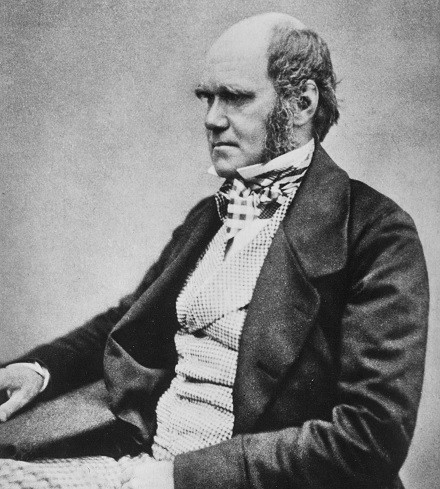

Charles Darwin
Este famoso naturalista inglés fue quien postuló que todas las especies de seres vivos ham evolucionado con el tiempo a partir de un antepasado común mediante un proceso denominado "selección natural". Su teoria de la evolución forma la base de la sintesis evolutiva moderna constituye una explicación lógica que unifica las observaciones sobre la diversidad de la vida y que es la base de la ciencia de la Biologia.
Albert Einstein

"La mente es como un paracaidas, únicamente sirve si lo tenemos abierto". Físico alemán es considerado el cientifico más importante y popular del siglo XX. En 1905, siendo todavia un joven investigador desconocido, publicó su teoria de la relatividad espacial. Diez años más tarde, presentaría la teoría de la relatividad general, lo que reformuló por completo el concepto de gravedad.
Julio César

Lider politico y militar del gran Imperio Romano, dando lugar ser el primer dirigente romano vivo cuyo rostro apareció en una moneda en circulación. A parte de su carrera política y militar este personaje histórico destacó como orador y escritor sobre Temas como la religión republicana romana, astronomia o latin.
Platón

Junto a Sócrates y Aristóteles, es considerado uno de los filosóficos más influyentes en el pensamiento de la Europa moderna. A diferencia de Sócrates, Platón escribió y conservó todas sus obras, introduciendo un nuevo estilo novedoso para la época: el diálogo. La contraposición de distintos puntos de vista y la caracterización psicológica de los interlocutores, supuso una herramienta alternativa a la expresión poética u oracular.
Aristóteles

Se le considera por el mundo académico como el primer cientifico e investigador de todos los tiempos, cuya influencia ha perdurado durante dos mil años. Fue todo un erudito, sabio, eminencia diferentes ámbitos de las ciencias humanidades: politico. filósofo, lógico y cientifico en la Antigua Grecia. Se le reconoce como el primer fundador de la lógica y la biologia, y sus obras han sido utilizadas como la base del desarrollo cientifico durante siglos.
Napoleón Bonaparte

Ambición, voluntad, valentia, inteligencia, soberbia, crueldad, grandeza...son apelativos que podrían describir perfectamente a este personaje de la historia. Menospreciado por unos. engrandecido por otros. enaltecido, vilipendiado, ánimos contradictorios los que se pueden leer y escuchar sobre él. Con su inteligencia militar fue capaz de conquistar Europa Oriental y Occidental llegando hasta el norte de África.